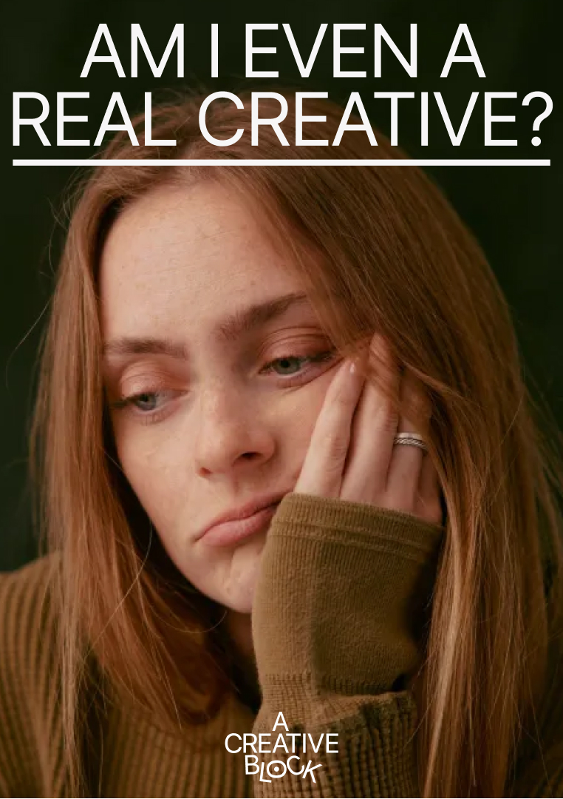

The working map
What is stopping the work?
Seven practical domains help us investigate the block without reducing a person or project to one label.
01
Starting & Doing
Intention is not becoming action.
→02
Confidence & Exposure
The work feels unsafe or like a verdict.
→03
Direction & Meaning
No direction feels clear or compelling.
→04
Energy & Recovery
The work asks for resources you do not have.
→05
The Work Itself
The idea, brief or material is not yielding.
→06
Structure & Workflow
The project is too large, chaotic or poorly sequenced.
→07
Context & Support
The world around the work is in the way.
→+1
A Skill Gap
Sometimes the honest answer is learning, practice or specialist help.
These are working domains, not diagnoses. More than one can be active, and the map should change when better evidence appears.
